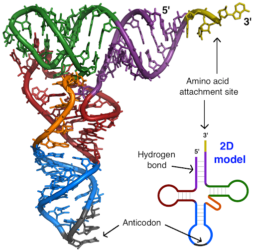

Structure
The RNA molecules are Typically around 75 to 95 nucleotides long. They are characterized by a set of three nucleotides known as anticodons. Transfer RNA's have a complex three dimensional shape which folds into this L like shape. In two dimensions this is characterized with a clover leaf like structure(1).

Image from TRNA-Phe on wikimedia by Yikrazuul
Function
They aid in the stage of translation in the ribosome. During the process of translation, tRNAs help build proteins by moving through three ribosomal sites—known as the A, P, and E sites—where they deliver amino acids in sequence. Each anticodon pairs with a matching codon on the mRNA strand, ensuring the correct amino acid is brought to the ribosome. There are unique tRNAs for each of the 20 amino acids used in protein production, and often more than one tRNA exists for a single amino acid(4). Depending on the organism, cells typically contain 40 to 60 different types of tRNA, each designed to recognize specific codons and supply the appropriate amino acid during protein assembly.